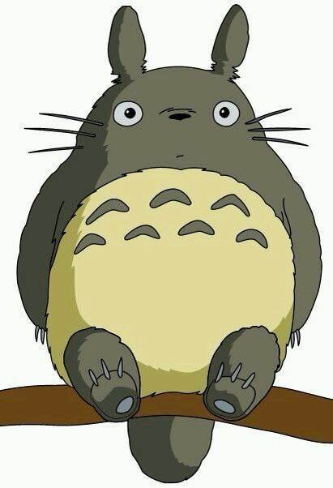

| 姓名 | 董瑾 | 性别 | 男 | 民族 | 汉族 |  |
| 移动电话 | dongjin1216@163.com | |||||
| 政治面貌 | 共青团员 | 出生年月 | 1996年12月 | |||
| 第一学历 | 工学学士 | 专业 | 给排水科学与工程 | |||
| 毕业院校 | 武汉市华中科技大学 | |||||
| 第二学历 | 专业 | |||||
| 毕业院校 | ||||||
论文情况 | 无 | |||||
外语水平 | CET-4：总分572 听力：192 阅读：201 写作和翻译：179 | |||||
计算机水平 | NCRE-2：C++语言程序设计 NCRE-3：网络技术 |
|||||
其他 | 参加“求是”大学生创新计划第三期培训并顺利结业。 | |||||
|
担任环境15级年级学生会组织部长 校财监委常务部部长 现担任班内学习委员 实习经历暂无 |
|
本人性格开朗、稳重、有活力，待人热情、真诚； 工作认真负责，积极主动，能吃苦耐劳，用于承受压力，勇于创新； 有很强的组织能力和团队协作精神，具有较强的适应能力； 纪律性强，工作积极配合； 意志坚强，具有较强的无私奉献精神。 对待工作认真负责，善于沟通、协调有较强的组织能力与团队精神； 活泼开朗、乐观上进、有爱心并善于施教并行； 上进心强、勤于学习能不断提高自身的能力与综合素质。 在未来的工作中，我将以充沛的精力，刻苦钻研的精神来努力工作，稳定地提高自己的工作能力，与企业同步发展。 |